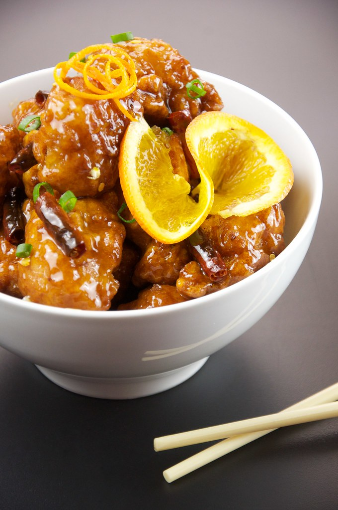

Description
Orange chicken is a popular Chinese-American dish known for its
sweet, tangy, and slightly spicy flavor.It typically consists of bite-sized pieces of crispy, deep-fried chicken
(usually made with boneless, skinless chicken thigh or breast), coated in a sticky orange-flavored sauce.
Ingredients
Chicken
- 4 Boneless Skinless Chicken Breasts cut into bite-size pieces
- 3 Eggs whisked
- 1/3 cup Cornstarch
- 1/3 cup Flour
- Salt
- Oil for frying
Orange Sauce
- 1 cup Orange Juice
- 1/2 cup Sugar
- 2 Tablespoons Rice Vinegar or White Vinegar
- 2 Tablespoons Soy Sauce use tamari for a gluten-free dish
- 1/4 teaspoon Ginger
- 1/4 teaspoon Garlic Powder or 2 garlic cloves, finely diced
- 1/2 teaspoon Red Chili Flakes
- Orange Zest from 1 orange
- 1 Tablespoon Cornstarch
Optional
Steps
To make orange sauce
- In a medium pot, add orange juice, sugar, vinegar, soy sauce, ginger, garlic, and red chili flakes.
Heat for 3 minutes.
- In a small bowl, whisk 1 Tablespoon of cornstarch with 2 Tablespoons of water to form a paste.
Add to orange sauce and whisk together. Continue to cook for 5 minutes, until the mixture begins to thicken.
Once the sauce is thickened, remove from heat and add orange zest.
To make chicken
- Place flour and cornstarch in a shallow dish or pie plate. Add a generous pinch of salt. Stir.
- Whisk eggs in shallow dish.
- Dip chicken pieces in egg mixture and then flour mixture. Place on plate.
- Heat 2 -3 inches of oil in a heavy-bottomed pot over medium-high heat.
Using a thermometer, watch for it to reach 350 degrees.
- Working in batches, cook several chicken pieces at a time.
Cook for 2 - 3 minutes, turning often until golden brown.
Place chicken on a paper-towel-lined plate. Repeat.
- Toss chicken with orange sauce. You may reserve some of the sauce
to place on rice. Serve it with a sprinkling of green onion and orange zest, if so desired.